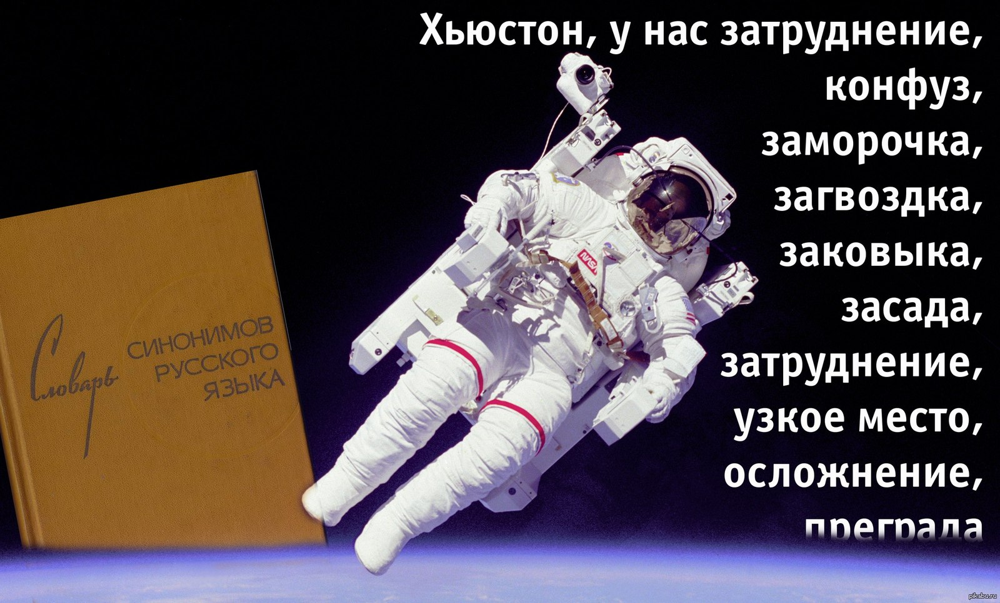

Пару лет назад, я подумала - было бы круто научиться верстать. Вот просто так, ни с чего. Нашла курс на Stepik, начала изучать... Хватило меня не надолго, пару лекций посмотрела, начала собирать страницу по заданию. Этой страницей была статья Википедии о Хьюстоне. Не помню в какой момент, что-то пошло не так - в общем ничего я не доделала... Смотрю сейчас на сделанное - сколько же тегов H1 я вставила в код!
С CSS уж как смогла - чувство прекрасного у меня притуплено, мне нужен дизайнер, чтоб сказал, как красивее :)
Зато теперь по прошествии времени, после просмотра лекций и семинаров, я могу исправить все, где ошиблась. Я сильный, я мощный, я ЪУЪ!

Хьюстон — четвёртый по количеству жителей город в Соединённых Штатах Америки и крупнейший город в штате Техас с населением 2 287 047 человек в 2021 году по оценке Бюро переписи населения США. Хьюстон является административным центром округа Харрис, а также главным экономическим центром агломерации Большого Хьюстона, занимающего пятое место среди агломераций по населению с общей численностью 7 122 240 человек по результатам переписи 2020 года[3][4]. Город располагается в 50 километрах от Мексиканского залива на прибрежной равнине.
Ну и конечно, любое упоминание о Хьюстоне, это тонны мемов:
Хьюстон был основан 30 августа 1836 года и включён в состав республики Техас 5 июня 1837 года, получив своё имя в честь Сэмюэла Хьюстона — главнокомандующего армией Техаса во время Техасской революции и президента Республики Техас. Быстрое развитие порта и железных дорог в XIX веке, а также начало добычи нефти и последовавшее развитие нефтяной промышленности в XX веке привели к быстрому росту населения. В 1960-е годы количество жителей превысило один миллион человек, а в 2000-е — два миллиона.
Город является ведущим мировым центром энергетической промышленности, а экономика города также представлена предприятиями в области аэронавтики, транспорта и здравоохранения. Важнейшими объектами для экономики и инфраструктуры города являются космический центр имени Линдона Джонсона, крупнейший американский по международным грузоперевозкам порт, хьюстонский судоходный канал, крупнейший в мире Техасский медицинский центр.
В оригинальной статье из Википедии вообще много чего написано о городе, но вс пересичлять мы конечно не будем, а ограничимся содержанием. Так вот, в статье описаны:
А чтобы сделать маркированный список, перечислим-ка города-побратимы Хьюстона:
Для желающих прочитать оригинальную статью о городе, милости просим сюда - статья о Хьюстоне в Википедии